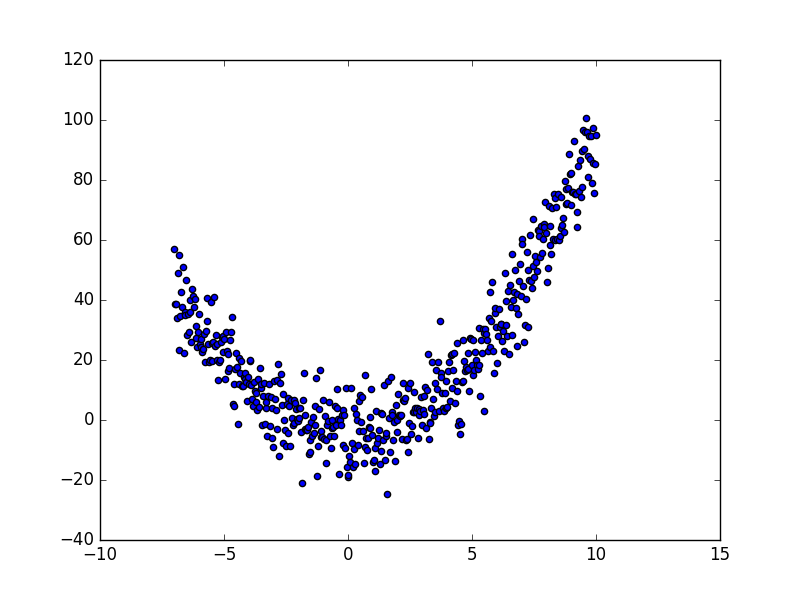
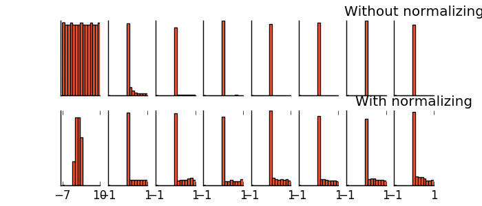
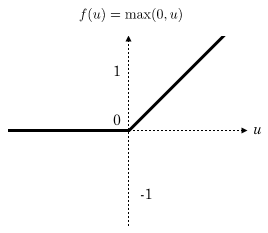
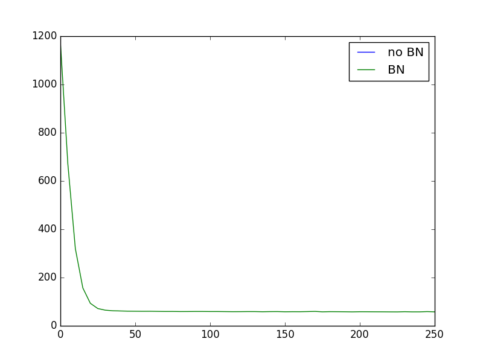
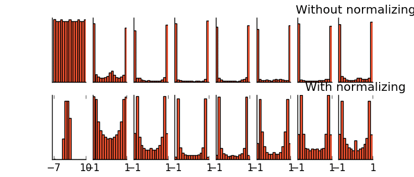
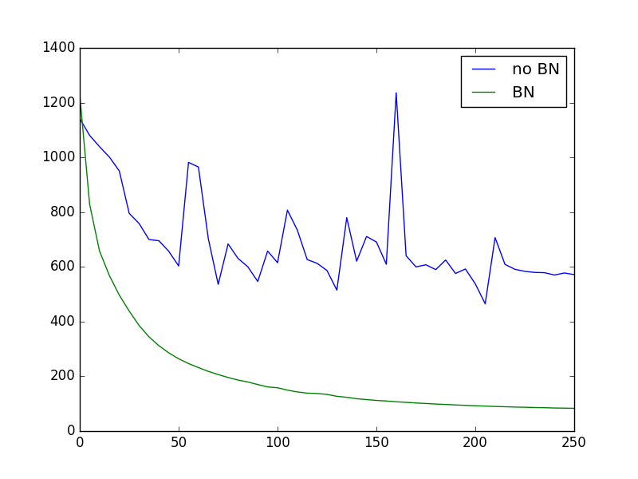

Batch Normalization 批标准化
作者: 莫烦 编辑: 莫烦 2016-12-05
学习资料:
- Batch normalization paper
- 本节相关代码
- 为 TF 2017 打造的新版可视化教学代码
- 我制作的 Batch normalization 简介视频
什么是 Batch Normalization
请参考我制作的 Batch normalization 简介视频 Batch normalization 是一种解决深度神经网络层数太多, 而没办法有效前向传递(forward propagate)的问题. 因为每一层的输出值都会有不同的 均值(mean) 和 方差(deviation), 所以输出数据的分布也不一样, 如下图, 从左到右是每一层的输入数据分布, 上排的没有 Batch normalization, 下排的有 Batch normalization.

我们以前说过, 为了更有效的学习数据, 我们会对数据预处理, 进行 normalization (请参考我制作的 为什么要特征标准化). 而现在请想象, 我们可以把 “每层输出的值” 都看成 “后面一层所接收的数据”. 对每层都进行一次 normalization 会不会更好呢? 这就是 Batch normalization 方法的由来.
搭建网络
输入需要的模块和定义网络的结构
import numpy as np
import tensorflow as tf
import matplotlib.pyplot as plt
ACTIVATION = tf.nn.relu # 每一层都使用 relu
N_LAYERS = 7 # 一共7层隐藏层
N_HIDDEN_UNITS = 30 # 每个层隐藏层有 30 个神经元
使用 build_net() 功能搭建神经网络:
def built_net(xs, ys, norm):
def add_layer(inputs, in_size, out_size, activation_function=None):
# 添加层功能
Weights = tf.Variable(tf.random_normal([in_size, out_size], mean=0., stddev=1.))
biases = tf.Variable(tf.zeros([1, out_size]) + 0.1)
Wx_plus_b = tf.matmul(inputs, Weights) + biases
if activation_function is None:
outputs = Wx_plus_b
else:
outputs = activation_function(Wx_plus_b)
return outputs
fix_seed(1)
layers_inputs = [xs] # 记录每层的 input
# loop 建立所有层
for l_n in range(N_LAYERS):
layer_input = layers_inputs[l_n]
in_size = layers_inputs[l_n].get_shape()[1].value
output = add_layer(
layer_input, # input
in_size, # input size
N_HIDDEN_UNITS, # output size
ACTIVATION, # activation function
)
layers_inputs.append(output) # 把 output 加入记录
# 建立 output layer
prediction = add_layer(layers_inputs[-1], 30, 1, activation_function=None)
cost = tf.reduce_mean(tf.reduce_sum(tf.square(ys - prediction), reduction_indices=[1]))
train_op = tf.train.GradientDescentOptimizer(0.001).minimize(cost)
return [train_op, cost, layers_inputs]
创建数据
创造数据并可视化数据:
x_data = np.linspace(-7, 10, 500)[:, np.newaxis]
noise = np.random.normal(0, 8, x_data.shape)
y_data = np.square(x_data) - 5 + noise
# 可视化 input data
plt.scatter(x_data, y_data)
plt.show()

Batch Normalization 代码
为了实现 Batch Normalization, 我们要对每一层的代码进行修改, 给 built_net 和 add_layer 都加上
norm 参数, 表示是否是 Batch Normalization 层:
def built_net(xs, ys, norm):
def add_layer(inputs, in_size, out_size, activation_function=None, norm=False):
然后每层的 Wx_plus_b 需要进行一次 batch normalize 的步骤, 这样输出到 activation 的 Wx_plus_b 就已经被 normalize 过了:
if norm: # 判断书否是 BN 层
fc_mean, fc_var = tf.nn.moments(
Wx_plus_b,
axes=[0], # 想要 normalize 的维度, [0] 代表 batch 维度
# 如果是图像数据, 可以传入 [0, 1, 2], 相当于求[batch, height, width] 的均值/方差, 注意不要加入 channel 维度
)
scale = tf.Variable(tf.ones([out_size]))
shift = tf.Variable(tf.zeros([out_size]))
epsilon = 0.001
Wx_plus_b = tf.nn.batch_normalization(Wx_plus_b, fc_mean, fc_var, shift, scale, epsilon)
# 上面那一步, 在做如下事情:
# Wx_plus_b = (Wx_plus_b - fc_mean) / tf.sqrt(fc_var + 0.001)
# Wx_plus_b = Wx_plus_b * scale + shift
# 如果你已经看不懂了, 请去我最上面学习资料里的链接 (我制作的 Batch normalization 简介视频)
如果你是使用 batch 进行每次的更新, 那每个 batch 的 mean/var 都会不同, 所以我们可以使用 moving average 的方法记录并慢慢改进 mean/var 的值.
然后将修改提升后的 mean/var 放入 tf.nn.batch_normalization().
而且在 test 阶段, 我们就可以直接调用最后一次修改的 mean/var 值进行测试, 而不是采用 test 时的 fc_mean/fc_var.
# 对这句进行扩充, 修改前:
Wx_plus_b = tf.nn.batch_normalization(Wx_plus_b, fc_mean, fc_var, shift, scale, epsilon)
# 修改后:
ema = tf.train.ExponentialMovingAverage(decay=0.5) # exponential moving average 的 decay 度
def mean_var_with_update():
ema_apply_op = ema.apply([fc_mean, fc_var])
with tf.control_dependencies([ema_apply_op]):
return tf.identity(fc_mean), tf.identity(fc_var)
mean, var = mean_var_with_update() # 根据新的 batch 数据, 记录并稍微修改之前的 mean/var
# 将修改后的 mean / var 放入下面的公式
Wx_plus_b = tf.nn.batch_normalization(Wx_plus_b, mean, var, shift, scale, epsilon)
那如何确定我们是在 train 阶段还是在 test 阶段呢, 我们可以修改上面的算法, 想办法传入 on_train 参数,
你也可以把 on_train 定义成全局变量. (注意: github 的代码中没有这一段, 想做 test 的同学们需要自己修改)
# 修改前:
mean, var = mean_var_with_update()
# 修改后:
mean, var = tf.cond(on_train, # on_train 的值是 True/False
mean_var_with_update, # 如果是 True, 更新 mean/var
lambda: ( # 如果是 False, 返回之前 fc_mean/fc_var 的Moving Average
ema.average(fc_mean),
ema.average(fc_var)
)
)
同样, 我们也可以在输入数据 xs 时, 给它做一个 normalization, 同样, 如果是最 batch data 来训练的话, 要重复上述的记录修改 mean/var 的步骤:
if norm:
# BN for the first input
fc_mean, fc_var = tf.nn.moments(
xs,
axes=[0],
)
scale = tf.Variable(tf.ones([1]))
shift = tf.Variable(tf.zeros([1]))
epsilon = 0.001
xs = tf.nn.batch_normalization(xs, fc_mean, fc_var, shift, scale, epsilon)
然后我们把在建立网络的循环中的这一步加入 norm 这个参数:
output = add_layer(
layer_input, # input
in_size, # input size
N_HIDDEN_UNITS, # output size
ACTIVATION, # activation function
norm, # normalize before activation
)
对比有无 BN
搭建两个神经网络, 一个没有 BN, 一个有 BN:
xs = tf.placeholder(tf.float32, [None, 1]) # [num_samples, num_features]
ys = tf.placeholder(tf.float32, [None, 1])
train_op, cost, layers_inputs = built_net(xs, ys, norm=False) # without BN
train_op_norm, cost_norm, layers_inputs_norm = built_net(xs, ys, norm=True) # with BN
训练神经网络:
代码中的 plot_his() 不会在这里讲解, 请自己在全套代码中查看.
sess = tf.Session()
sess.run(tf.global_variables_initializer())
# 记录两种网络的 cost 变化
cost_his = []
cost_his_norm = []
record_step = 5
plt.ion()
plt.figure(figsize=(7, 3))
for i in range(251):
if i % 50 == 0:
# 每层在 activation 之前计算结果值的分布
all_inputs, all_inputs_norm = sess.run([layers_inputs, layers_inputs_norm], feed_dict={xs: x_data, ys: y_data})
plot_his(all_inputs, all_inputs_norm)
sess.run(train_op, feed_dict={xs: x_data, ys: y_data})
sess.run(train_op_norm, feed_dict={xs: x_data, ys: y_data})
if i % record_step == 0:
# 记录 cost
cost_his.append(sess.run(cost, feed_dict={xs: x_data, ys: y_data}))
cost_his_norm.append(sess.run(cost_norm, feed_dict={xs: x_data, ys: y_data}))
plt.ioff()
plt.figure()
plt.plot(np.arange(len(cost_his))*record_step, np.array(cost_his), label='no BN') # no norm
plt.plot(np.arange(len(cost_his))*record_step, np.array(cost_his_norm), label='BN') # norm
plt.legend()
plt.show()

可以看出, 没有用 BN 的时候, 每层的值迅速全部都变为 0, 也可以说, 所有的神经元都已经死了.
而有 BN, relu 过后, 每层的值都能有一个比较好的分布效果, 大部分神经元都还活着.
(看不懂了? 没问题, 再去看一遍我制作的 Batch normalization 简介视频).
Relu 激励函数的图在这里:

我们也看看使用 relu cost 的对比:

因为没有使用 NB 的网络, 大部分神经元都死了, 所以连误差曲线都没了.
如果使用不同的 ACTIVATION 会怎么样呢? 不如把 relu 换成 tanh:
ACTIVATION = tf.nn.tanh

可以看出, 没有 NB, 每层的值迅速全部都饱和, 都跑去了 -1/1 这个饱和区间, 有 NB, 即使前一层因变得相对饱和, 但是后面几层的值都被 normalize 到有效的不饱和区间内计算. 确保了一个活的神经网络.
tanh 激励函数的图在这里:

最后我们看一下使用 tanh 的误差对比:

如果你觉得这篇文章或视频对你的学习很有帮助, 请你也分享它, 让它能再次帮助到更多的需要学习的人. 莫烦没有正式的经济来源, 如果你也想支持 莫烦Python 并看到更好的教学内容, 赞助他一点点, 作为鼓励他继续开源的动力.